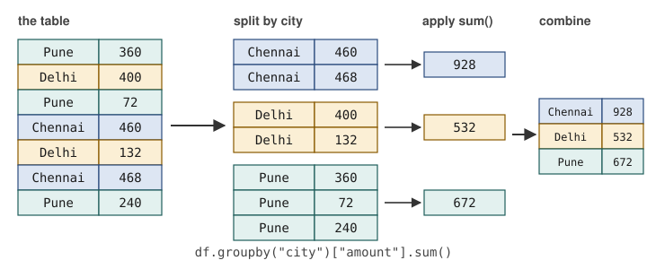

Chapter 5: Cleaning, Reshaping, Grouping and Joining¶
Turning raw tables into tables you can trust and analyse
Learning outcomes
After this chapter you should be able to:
- find and count missing values, and choose between dropping, filling and flagging them;
- remove duplicate rows, with or without a subset of key columns;
- convert columns to the right types, coercing bad values to missing;
- clean text columns with the
.strmethods; - detect impossible values and outliers, and decide what to do with them;
- bin a numeric column into categories with
pd.cutandpd.qcut; - summarise groups with
groupby,aggandtransform(split-apply-combine); - reshape tables between wide and long forms with
pivot_table,meltandcrosstab; - combine tables with
concatandmerge, and choose the right kind of join.
Data rarely arrives ready for analysis. Values are missing, rows are repeated, numbers are stored as text, the same city is spelled four ways, and the information you need is split across several tables. This chapter is about the transformations that fix those problems and then summarise and rearrange the clean result. It is the longest chapter in the first half of the book because this is where most of the practical work of data science happens.
import io
import numpy as np
import pandas as pd
5.1 A messy table¶
A small business has exported its customer list. Here it is, exactly as exported:
raw_text = """id,city,age,joined,spend,plan
1,Pune,34,2023-01-15,"1,200",basic
2, delhi ,29,2023-02-03,850,premium
3,Chennai,,2023-02-20,430,basic
1,Pune,34,2023-01-15,"1,200",basic
5,Mumbai,-1,2023-03-11,2300,premium
6,DELHI,41,2023-03-30,NA,basic
7,Pune ,230,2023-04-02,640,Basic
8,chennai,52,2023-02-30,1100,premium
9,Kolkata,38,2023-05-19,-,basic
10,Mumbai,27,2023-06-01,980,PREMIUM
"""
raw = pd.read_csv(io.StringIO(raw_text))
print(raw)
raw.info()
id city age joined spend plan
0 1 Pune 34.0 2023-01-15 1,200 basic
1 2 delhi 29.0 2023-02-03 850 premium
2 3 Chennai NaN 2023-02-20 430 basic
3 1 Pune 34.0 2023-01-15 1,200 basic
4 5 Mumbai -1.0 2023-03-11 2300 premium
5 6 DELHI 41.0 2023-03-30 NaN basic
6 7 Pune 230.0 2023-04-02 640 Basic
7 8 chennai 52.0 2023-02-30 1100 premium
8 9 Kolkata 38.0 2023-05-19 - basic
9 10 Mumbai 27.0 2023-06-01 980 PREMIUM
<class 'pandas.DataFrame'>
RangeIndex: 10 entries, 0 to 9
Data columns (total 6 columns):
# Column Non-Null Count Dtype
--- ------ -------------- -----
0 id 10 non-null int64
1 city 10 non-null str
2 age 9 non-null float64
3 joined 10 non-null str
4 spend 9 non-null str
5 plan 10 non-null str
dtypes: float64(1), int64(1), str(4)
memory usage: 861.0 bytes
Looking carefully, there are at least eight problems:
- Customer 1 appears twice (a duplicate row).
- City names have stray spaces and inconsistent capitals (
" delhi ",DELHI,chennai,"Pune "). - Customer 3's age is missing.
- Two ages are impossible: -1 and 230.
- One date does not exist (30 February).
- The
spendcolumn was read as text (str), because one value has a thousands separator ("1,200") and others areNAand-. NAwas recognised as missing, but-was not.- The plan names have inconsistent capitals.
The info output gives two of these away at once: spend and joined are str rather than numbers and dates, and age has 9 non-null values out of 10. The sections below fix each problem in turn.
5.2 Missing values¶
pandas marks missing values as NaN (for numbers), NaT ("not a time", for dates) or NA. The method isna gives a mask of missing values, and summing it counts them per column.
print(raw.isna().sum())
print(raw[raw["age"].isna()])
id 0
city 0
age 1
joined 0
spend 1
plan 0
dtype: int64
id city age joined spend plan
2 3 Chennai NaN 2023-02-20 430 basic
Only two missing values are detected, because read_csv recognises a standard list of markers (NA, empty fields, NaN, null and a few others) but not -. Telling it about extra markers when loading is the cleanest fix:
raw = pd.read_csv(io.StringIO(raw_text), na_values=["-"])
print(raw["spend"].isna().sum(), "missing spend values")
2 missing spend values
Once missing values are found, there are three things you can do with them.
Drop the rows (or columns) that contain them, with dropna. This is simple and honest when few rows are affected and they are missing for reasons unrelated to the question. It wastes data and can bias the result when many rows are affected, or when the missingness is related to the values (people with high incomes may be less likely to report them).
Fill them with a value, with fillna: a constant, the column's mean or median, the previous value in a time series (ffill), or a prediction from other columns. Filling keeps the rows but invents data, and it makes the column look less variable than it really is.
Flag them: keep a column that records which values were missing, so that the information is not lost and the analysis can check whether the missing rows differ from the rest.
demo = pd.DataFrame({"x": [1.0, np.nan, 3.0, np.nan], "y": ["a", "b", None, "d"]})
print(demo.dropna()) # any missing value drops the row
print(demo.dropna(subset=["x"])) # only x matters
print(demo.fillna({"x": demo["x"].median(), "y": "unknown"}))
demo["x_missing"] = demo["x"].isna()
print(demo)
x y
0 1.0 a
x y
0 1.0 a
2 3.0 NaN
x y
0 1.0 a
1 2.0 b
2 3.0 unknown
3 2.0 d
x y x_missing
0 1.0 a False
1 NaN b True
2 3.0 NaN False
3 NaN d True
Key idea
There is no correct way to handle missing values in general, only a defensible choice for a particular question. Whatever you choose, count the missing values first, report how many there were and what you did, and check whether the choice changes the answer.
Integers with missing values¶
A NumPy integer column cannot hold NaN, so an integer column with a gap becomes float64 (the age column above prints as 34.0). pandas has nullable types, written with a capital letter (Int64, Float64, boolean), that can hold integers alongside a missing marker, shown as <NA>:
ages = pd.Series([34, None, 41])
print(ages.dtype, ages.tolist())
print(ages.astype("Int64"))
float64 [34.0, nan, 41.0]
0 34
1 <NA>
2 41
dtype: Int64
5.3 Duplicates¶
duplicated marks each row that repeats an earlier one; drop_duplicates removes them. By default all columns must match. With subset= only the named columns are compared, which finds records that share an identifier but differ elsewhere: often a more serious problem than an exact copy.
print(raw.duplicated().sum(), "exact duplicate rows")
print(raw[raw.duplicated(subset=["id"], keep=False)])
df = raw.drop_duplicates().reset_index(drop=True)
print(df.shape)
1 exact duplicate rows
id city age joined spend plan
0 1 Pune 34.0 2023-01-15 1,200 basic
3 1 Pune 34.0 2023-01-15 1,200 basic
(9, 6)
keep=False marks every member of a duplicated group, not just the later copies, so that you can see all of them together. Here the two rows for customer 1 are identical, so dropping one is safe. If they had differed (say, in spend), you would have to find out which was right.
5.4 Fixing types¶
Each column should have the type its meaning requires: numbers as numbers, dates as dates, categories as text or category. pd.to_numeric and pd.to_datetime convert columns, and errors="coerce" turns any value that cannot be converted into a missing value instead of raising an error.
df["spend"] = pd.to_numeric(df["spend"].str.replace(",", ""), errors="coerce")
df["joined"] = pd.to_datetime(df["joined"], format="%Y-%m-%d", errors="coerce")
print(df[["id", "joined", "spend"]])
print(df.dtypes)
id joined spend
0 1 2023-01-15 1200.0
1 2 2023-02-03 850.0
2 3 2023-02-20 430.0
3 5 2023-03-11 2300.0
4 6 2023-03-30 NaN
5 7 2023-04-02 640.0
6 8 NaT 1100.0
7 9 2023-05-19 NaN
8 10 2023-06-01 980.0
id int64
city str
age float64
joined datetime64[us]
spend float64
plan str
dtype: object
The comma was removed before conversion, so "1,200" became 1200. The impossible date 2023-02-30 became NaT. Giving the format explicitly is good practice: it is faster, and it makes pandas reject dates in an unexpected layout instead of guessing.
Caution: coercion hides problems as well as solving them
errors="coerce" turns every unconvertible value into a missing value, silently. Always count the missing values before and after a coercion; a large jump means the conversion rule is wrong (for example, a column of dates written day-first, read as month-first).
5.5 Cleaning text¶
The .str accessor applies string methods to every value in a column at once (and leaves missing values missing).
print(df["city"].unique().tolist())
df["city"] = df["city"].str.strip().str.title()
df["plan"] = df["plan"].str.lower()
print(df["city"].value_counts())
print(df["plan"].value_counts())
['Pune', ' delhi ', 'Chennai', 'Mumbai', 'DELHI', 'Pune ', 'chennai', 'Kolkata']
city
Pune 2
Delhi 2
Chennai 2
Mumbai 2
Kolkata 1
Name: count, dtype: int64
plan
basic 5
premium 4
Name: count, dtype: int64
Eight spellings collapsed into five real cities. Other useful methods are str.replace (with a plain string or a regular expression), str.contains (a mask of rows containing a pattern), str.startswith, str.split and str.len. When the variants cannot be fixed by a rule, a dictionary does it:
fix = {"Bombay": "Mumbai", "Madras": "Chennai", "Calcutta": "Kolkata"}
old_names = pd.Series(["Bombay", "Pune", "Madras"])
print(old_names.replace(fix).tolist())
['Mumbai', 'Pune', 'Chennai']
A column with a few distinct values repeated many times can be stored as a category, which saves memory and records the set of allowed values. An ordered category also knows the order of its levels:
df["plan"] = pd.Categorical(df["plan"], categories=["basic", "premium"], ordered=True)
print(df["plan"].dtype, (df["plan"] > "basic").sum(), "premium customers")
category 4 premium customers
5.6 Impossible values and outliers¶
An impossible value breaks a rule that must hold: an age of -1 or 230, a negative quantity, a percentage above 100, an end date before a start date. These are errors, and the usual treatment is to set them to missing (or correct them, if the right value can be found).
An outlier is a value far from the rest that may well be genuine: one very large order, one very tall person. Outliers should not be removed automatically; they should be looked at, and kept unless there is a reason to believe they are errors.
bad_age = (df["age"] < 0) | (df["age"] > 110)
print(df.loc[bad_age, ["id", "age"]])
df.loc[bad_age, "age"] = np.nan
print(df["age"].describe().round(1))
id age
3 5 -1.0
5 7 230.0
count 6.0
mean 36.8
std 9.1
min 27.0
25% 30.2
50% 36.0
75% 40.2
max 52.0
Name: age, dtype: float64
A common rule of thumb for flagging outliers uses the interquartile range (IQR), the distance between the first quartile \(Q_1\) and the third quartile \(Q_3\). Values below \(Q_1 - 1.5\,\text{IQR}\) or above \(Q_3 + 1.5\,\text{IQR}\) are flagged. (These are the points beyond the whiskers of a box plot, Chapter 6.)
q1, q3 = df["spend"].quantile([0.25, 0.75])
iqr = q3 - q1
low, high = q1 - 1.5 * iqr, q3 + 1.5 * iqr
print(f"Q1={q1}, Q3={q3}, IQR={iqr}, fences=({low}, {high})")
print(df.loc[(df["spend"] < low) | (df["spend"] > high), ["id", "spend"]])
Q1=745.0, Q3=1150.0, IQR=405.0, fences=(137.5, 1757.5)
id spend
3 5 2300.0
Customer 5's spend of 2300 is flagged. Nothing suggests it is an error, so it stays; but a report on "typical spend" should prefer the median, which it barely affects.
Note: clipping
Sometimes extreme values are kept but limited to a range, with clip(lower, upper). This is called winsorising when the limits are percentiles. It reduces the influence of extremes on means and on some models, at the cost of changing the data; use it deliberately and say so.
Here is the cleaned customer table, which Section 5.9 uses again:
customers = df
print(customers)
id city age joined spend plan
0 1 Pune 34.0 2023-01-15 1200.0 basic
1 2 Delhi 29.0 2023-02-03 850.0 premium
2 3 Chennai NaN 2023-02-20 430.0 basic
3 5 Mumbai NaN 2023-03-11 2300.0 premium
4 6 Delhi 41.0 2023-03-30 NaN basic
5 7 Pune NaN 2023-04-02 640.0 basic
6 8 Chennai 52.0 NaT 1100.0 premium
7 9 Kolkata 38.0 2023-05-19 NaN basic
8 10 Mumbai 27.0 2023-06-01 980.0 premium
5.7 Binning¶
Turning a numeric column into ordered categories ("binning") makes tables and charts easier to read. pd.cut uses edges you choose; pd.qcut makes bins with (roughly) equal numbers of values, using quantiles.
ages = pd.Series([19, 23, 31, 38, 45, 52, 61, 70])
groups = pd.cut(ages, bins=[0, 25, 45, 65, 120], labels=["under 25", "25-44", "45-64", "65+"], right=False)
print(pd.DataFrame({"age": ages, "group": groups}))
print(pd.qcut(ages, q=4, labels=["Q1", "Q2", "Q3", "Q4"]).value_counts().sort_index())
age group
0 19 under 25
1 23 under 25
2 31 25-44
3 38 25-44
4 45 45-64
5 52 45-64
6 61 45-64
7 70 65+
Q1 2
Q2 2
Q3 2
Q4 2
Name: count, dtype: int64
right=False makes each bin include its left edge and exclude its right one, so 25 falls in "25-44" and 45 in "45-64". Getting the edges right is the whole difficulty of binning; always check a few values at the boundaries.
5.8 Grouping: split, apply, combine¶
Many questions have the form "for each group, compute a summary": revenue per city, average mark per subject, number of patients per ward per month. pandas answers them with groupby, which follows a pattern called split-apply-combine (Figure 5.1): split the rows into groups by the values of a key, apply a function to each group, and combine the results into a new table.

To have enough rows to make grouping interesting, we generate a year of quarterly sales for three regions and three products with a seeded random generator:
rng = np.random.default_rng(5)
regions = ["North", "South", "West"]
products = ["tea", "coffee", "juice"]
quarters = ["Q1", "Q2", "Q3", "Q4"]
rows = []
for r in regions:
for p in products:
base = {"tea": 300, "coffee": 200, "juice": 120}[p]
for q in quarters:
units = int(base * rng.uniform(0.7, 1.3)) + (60 if (p == "juice" and q == "Q2") else 0)
rows.append({"region": r, "product": p, "quarter": q, "units": units})
sales = pd.DataFrame(rows)
sales["price"] = sales["product"].map({"tea": 10.0, "coffee": 15.0, "juice": 25.0})
sales["revenue"] = sales["units"] * sales["price"]
print(sales.shape)
print(sales.head(6))
(36, 6)
region product quarter units price revenue
0 North tea Q1 354 10.0 3540.0
1 North tea Q2 355 10.0 3550.0
2 North tea Q3 302 10.0 3020.0
3 North tea Q4 261 10.0 2610.0
4 North coffee Q1 146 15.0 2190.0
5 North coffee Q2 186 15.0 2790.0
(Juice gets an extra 60 units in the second quarter, the hot season, so that there is a pattern to find.)
Basic grouping¶
print(sales.groupby("region")["revenue"].sum())
print(sales.groupby(["region", "product"])["units"].sum().head(6))
region
North 36010.0
South 38410.0
West 36940.0
Name: revenue, dtype: float64
region product
North coffee 666
juice 532
tea 1272
South coffee 754
juice 522
tea 1405
Name: units, dtype: int64
Grouping by two keys gives a result indexed by both, a MultiIndex. reset_index() turns the keys back into ordinary columns, which is usually easier to work with.
Several summaries at once: agg¶
agg applies several functions at once. Named aggregation gives each result column a name of your choice, as new_name=(column, function):
summary = (sales.groupby("product")
.agg(total_units=("units", "sum"),
mean_units=("units", "mean"),
best_quarter_units=("units", "max"),
revenue=("revenue", "sum"),
n_rows=("units", "size"))
.sort_values("revenue", ascending=False))
print(summary.round(1))
total_units mean_units best_quarter_units revenue n_rows
product
tea 3996 333.0 385 39960.0 12
juice 1554 129.5 215 38850.0 12
coffee 2170 180.8 244 32550.0 12
Keeping the original rows: transform¶
agg returns one row per group. transform returns a result for every original row, the group's summary repeated, which is what you need to compare each row with its group. For example, each quarter's share of its region-and-product total:
sales["group_total"] = sales.groupby(["region", "product"])["units"].transform("sum")
sales["share"] = (sales["units"] / sales["group_total"]).round(3)
print(sales.loc[(sales["region"] == "North") & (sales["product"] == "juice"),
["quarter", "units", "group_total", "share"]])
quarter units group_total share
8 Q1 87 532 0.164
9 Q2 215 532 0.404
10 Q3 130 532 0.244
11 Q4 100 532 0.188
The North's juice sales peak in Q2, as built into the data. Two further methods complete the toolkit: filter keeps or drops whole groups by a condition (sales.groupby("region").filter(lambda g: g["revenue"].sum() > 37000)), and apply runs an arbitrary function on each group's DataFrame when nothing simpler fits.
Caution: groups with missing keys
By default groupby leaves out rows whose key is missing. If 50 orders have no city, groupby("city") silently ignores them and the city totals no longer add up to the grand total. Pass dropna=False to keep them as a group of their own, or count the missing keys first.
5.9 Reshaping¶
Long to wide: pivot_table¶
The sales table is long: one row per region, product and quarter. For reading, a wide table with one row per product and one column per quarter is easier. pivot_table makes it, aggregating if several rows fall in the same cell:
wide = sales.pivot_table(index="product", columns="quarter", values="units", aggfunc="sum")
print(wide)
print(sales.pivot_table(index="region", columns="product", values="revenue",
aggfunc="sum", margins=True, margins_name="Total"))
quarter Q1 Q2 Q3 Q4
product
coffee 577 527 634 432
juice 331 553 375 295
tea 974 1106 923 993
product coffee juice tea Total
region
North 9990.0 13300.0 12720.0 36010.0
South 11310.0 13050.0 14050.0 38410.0
West 11250.0 12500.0 13190.0 36940.0
Total 32550.0 38850.0 39960.0 111360.0
margins=True adds row and column totals. The juice row of the first table shows the Q2 peak at a glance; this is the value of the wide layout for people.
pd.crosstab is the special case of counting combinations of two categorical columns:
print(pd.crosstab(customers["city"], customers["plan"]))
plan basic premium
city
Chennai 1 1
Delhi 1 1
Kolkata 1 0
Mumbai 0 2
Pune 2 0
Wide to long: melt¶
melt reverses the process: it turns column headings into values of a new column. It is how untidy tables like Table 1.2 of Chapter 1 become tidy.
rain_wide = pd.DataFrame({"station": ["North", "South"], "Jan": [12, 30], "Feb": [8, 25], "Mar": [15, 41]})
rain_long = rain_wide.melt(id_vars="station", var_name="month", value_name="rainfall_mm")
print(rain_long)
print(rain_long.pivot(index="station", columns="month", values="rainfall_mm"))
station month rainfall_mm
0 North Jan 12
1 South Jan 30
2 North Feb 8
3 South Feb 25
4 North Mar 15
5 South Mar 41
month Feb Jan Mar
station
North 8 12 15
South 25 30 41
pivot is pivot_table without aggregation; it raises an error if two rows would fill the same cell. Notice that the columns come back in alphabetical order (Feb, Jan, Mar). If the order matters, make month an ordered categorical first, or reorder the columns with wide[["Jan", "Feb", "Mar"]].
5.10 Combining tables¶
Stacking: concat¶
pd.concat stacks tables with the same columns on top of each other (or side by side with axis=1). It is used to combine data that arrived in pieces, such as one file per month.
jan = pd.DataFrame({"day": [1, 2], "units": [30, 41]})
feb = pd.DataFrame({"day": [1, 2], "units": [28, 35]})
both = pd.concat([jan.assign(month="Jan"), feb.assign(month="Feb")], ignore_index=True)
print(both)
day units month
0 1 30 Jan
1 2 41 Jan
2 1 28 Feb
3 2 35 Feb
Joining: merge¶
Information about one thing is often spread over several tables: orders in one, customers in another, products in a third. merge joins two tables by matching the values of one or more key columns, like a join in SQL.
orders = pd.DataFrame({
"order_id": [501, 502, 503, 504, 505],
"customer": [2, 5, 2, 11, 9],
"amount": [450.0, 1200.0, 300.0, 80.0, 650.0],
})
print(orders.merge(customers[["id", "city", "plan"]], left_on="customer", right_on="id", how="inner"))
order_id customer amount id city plan
0 501 2 450.0 2 Delhi premium
1 502 5 1200.0 5 Mumbai premium
2 503 2 300.0 2 Delhi premium
3 505 9 650.0 9 Kolkata basic
Order 504 is for customer 11, who is not in the customer table, so an inner join drops it: only rows with a match on both sides survive. The four kinds of join differ in what happens to rows without a match:
how= |
Keeps | Unmatched rows from the other table |
|---|---|---|
"inner" |
only keys present in both tables | dropped |
"left" |
every row of the left table | filled with NaN |
"right" |
every row of the right table | filled with NaN |
"outer" |
every key from either table | filled with NaN on the missing side |
Table 5.1. The four kinds of join in merge.
left = orders.merge(customers[["id", "city"]], left_on="customer", right_on="id",
how="left", indicator=True)
print(left)
print(left["_merge"].value_counts())
order_id customer amount id city _merge
0 501 2 450.0 2.0 Delhi both
1 502 5 1200.0 5.0 Mumbai both
2 503 2 300.0 2.0 Delhi both
3 504 11 80.0 NaN NaN left_only
4 505 9 650.0 9.0 Kolkata both
_merge
both 4
left_only 1
right_only 0
Name: count, dtype: int64
indicator=True adds a column _merge saying where each row came from (both, left_only or right_only). It is the quickest way to find keys that failed to match, such as the order for customer 11, which would vanish without trace in an inner join.
Caution: joins can multiply rows
If a key appears more than once on both sides, every combination is produced: three rows for customer 2 on the left and two on the right give six rows. This is right for some questions and a disaster for others (totals counted several times). Check the number of rows before and after every merge, and use validate="many_to_one" (or "one_to_one") to make pandas raise an error if the key is not unique on the side where it should be.
checked = orders.merge(customers[["id", "city"]], left_on="customer", right_on="id",
how="left", validate="many_to_one")
print(len(orders), "orders before,", len(checked), "rows after")
5 orders before, 5 rows after
5.11 Worked example: a cleaning function¶
Cleaning steps should be written once, as a function, and applied to the raw data whenever it is loaded. That way the raw data is never altered, every step is visible and can be checked, and a new export with the same problems is cleaned identically. Here is the whole of this chapter's cleaning as one function, applied to the original text:
def clean_customers(text):
"""Load and clean the raw customer export."""
df = pd.read_csv(io.StringIO(text), na_values=["-"])
n_raw = len(df)
df = df.drop_duplicates()
df["city"] = df["city"].str.strip().str.title()
df["plan"] = df["plan"].str.lower()
df["spend"] = pd.to_numeric(df["spend"].str.replace(",", ""), errors="coerce")
df["joined"] = pd.to_datetime(df["joined"], format="%Y-%m-%d", errors="coerce")
df.loc[(df["age"] < 0) | (df["age"] > 110), "age"] = np.nan
report = {"raw rows": n_raw, "after dedup": len(df),
"missing": df.isna().sum()[lambda s: s > 0].to_dict()}
return df.reset_index(drop=True), report
clean, report = clean_customers(raw_text)
print(report)
print(clean.groupby("plan")["spend"].agg(["count", "median"]))
{'raw rows': 10, 'after dedup': 9, 'missing': {'age': 3, 'joined': 1, 'spend': 2}}
count median
plan
basic 3 640.0
premium 4 1040.0
The report travels with the data: 10 raw rows, 9 after removing the duplicate, three ages, one date and two spend values missing. The final line answers a real question (premium customers spend more than basic ones, at the median), and the count column shows on how few customers that rests.
5.12 Summary¶
Summary
- Count missing values with
isna().sum(); tellread_csvabout extra markers withna_values. Drop, fill or flag them, and report the choice. - Find duplicates with
duplicated(usesubset=for key columns andkeep=Falseto see whole groups); remove them withdrop_duplicates. - Convert types with
pd.to_numericandpd.to_datetime;errors="coerce"turns bad values into missing ones, so count before and after. - Clean text with
.str.strip(),.str.lower(),.str.title(),.str.replace(); map variants with a dictionary; store repeated labels ascategory. - Set impossible values to missing; look at outliers (the IQR rule flags them) but keep them unless they are errors.
- Bin with
pd.cut(your edges) andpd.qcut(equal counts). groupbysplits, applies and combines:agggives one row per group,transformone value per original row.pivot_tableandcrosstabmake wide summary tables;meltmakes long, tidy ones.concatstacks tables;mergejoins them on keys. Know your join (inner,left,right,outer), useindicator=Trueto find unmatched keys, andvalidate=to catch duplicated keys.- Put cleaning steps in a function that starts from the raw data.
5.13 Exercises¶
Exercise 1
The column rating holds the strings "4", "5", "n/a", "3", "", "five". Convert it to numbers, with anything unusable as missing. How many missing values result?
Answer
rating = pd.Series(["4", "5", "n/a", "3", "", "five"])
r = pd.to_numeric(rating, errors="coerce")
print(r.tolist(), r.isna().sum())
[4.0, 5.0, nan, 3.0, nan, nan] 3
Three: "n/a", the empty string and "five". (If "five" matters, map it to 5 before converting.)
Exercise 2
Using sales, find the quarter with the highest total revenue across all regions and products.
Answer
by_q = sales.groupby("quarter")["revenue"].sum()
print(by_q)
print(by_q.idxmax())
quarter
Q1 26670.0
Q2 32790.0
Q3 28115.0
Q4 23785.0
Name: revenue, dtype: float64
Q2
Exercise 3
Add a column to sales giving each row's units minus the average units for its product (over all regions and quarters). Which row is furthest above its product's average?
Answer
sales["vs_product_mean"] = sales["units"] - sales.groupby("product")["units"].transform("mean")
print(sales.loc[sales["vs_product_mean"].idxmax(), ["region", "product", "quarter", "units", "vs_product_mean"]])
region North
product juice
quarter Q2
units 215
vs_product_mean 85.5
Name: 9, dtype: object
transform("mean") repeats each product's mean on every row of that product, so the subtraction is row by row.
Exercise 4
Table A has 100 orders with a customer_id; table B has one row per customer, but 3 customers who placed orders are missing from it. How many rows do an inner join and a left join (A on the left) give, if those 3 customers placed 5 orders between them?
Answer
The inner join gives 95 rows (the 5 orders without a matching customer are dropped). The left join gives 100 rows, with NaN in B's columns for the 5 unmatched orders. Both assume customer_id is unique in B; otherwise rows would multiply.
Exercise 5
Turn this wide table of marks into a long one with columns student, subject, mark, and then compute the mean mark per subject.
pd.DataFrame({"student": ["A", "B", "C"], "maths": [70, 55, 90], "physics": [65, 60, 85]})
Answer
marks = pd.DataFrame({"student": ["A", "B", "C"], "maths": [70, 55, 90], "physics": [65, 60, 85]})
long = marks.melt(id_vars="student", var_name="subject", value_name="mark")
print(long)
print(long.groupby("subject")["mark"].mean().round(2))
student subject mark
0 A maths 70
1 B maths 55
2 C maths 90
3 A physics 65
4 B physics 60
5 C physics 85
subject
maths 71.67
physics 70.00
Name: mark, dtype: float64
Exercise 6
Why is replacing missing ages with the mean age a questionable choice for a study of how spending varies with age?
Answer
It puts all the customers with unknown age at one value, the mean, which creates an artificial cluster there and weakens any real relationship between age and spending. It also understates the spread of ages. Dropping those customers (if few), or flagging them and checking whether they differ in spending, is more defensible; whichever is chosen should be reported.
5.14 Quiz¶
Check your understanding of Chapter 5
Exercise 1
Which call turns unconvertible strings into missing values?
- pd.to_numeric(s)
- pd.to_numeric(s, errors="coerce")
- s.astype(float)
- s.fillna(0)
Answer
pd.to_numeric(s, errors="coerce")
Exercise 2
Which groupby method returns one value for every original row?
- agg
- transform
- filter
- size
Answer
transform
Exercise 3
Which join keeps every row of the left table, matched or not?
- inner
- left
- right
- cross
Answer
left
Exercise 4
Which function turns column headings into values of a new column (wide to long)?
- pivot_table
- melt
- crosstab
- concat
Answer
melt
Exercise 5
With Q1 = 10 and Q3 = 30, above which value does the IQR rule flag an outlier?
- 40
- 45
- 60
- 70
Answer
60
IQR = 20, so the upper fence is 30 + 1.5 x 20 = 60.
Exercise 6
Which keyword argument of merge adds a column showing where each row came from?
Answer
indicator / indicator=True
Exercise 7
An age of 230 in a customer table is best described as
- an outlier to keep
- an impossible value to set to missing
- a duplicate
- a category
Answer
an impossible value to set to missing
Exercise 8
What does drop_duplicates(subset=["id"]) compare?
- all columns
- only the id column
- only the index
- nothing
Answer
only the id column